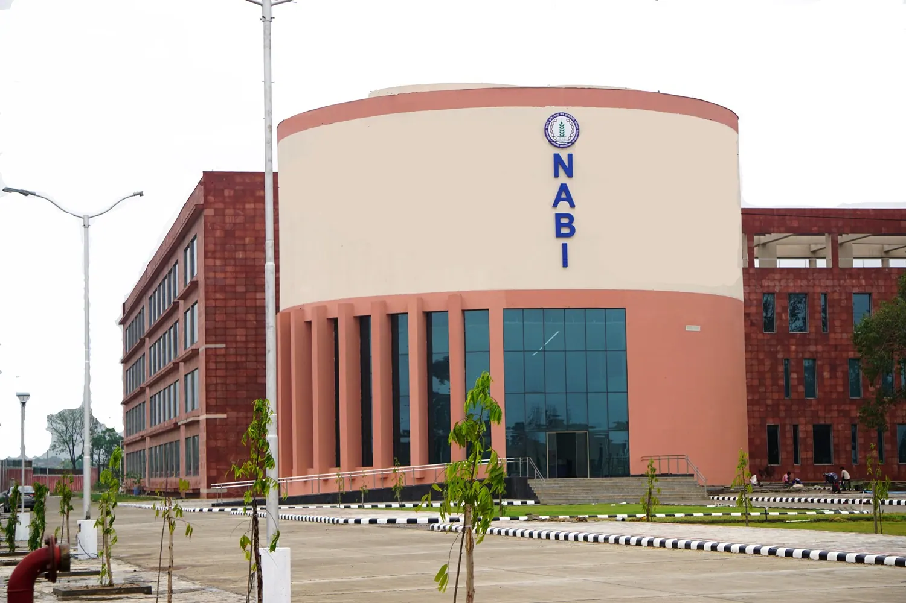
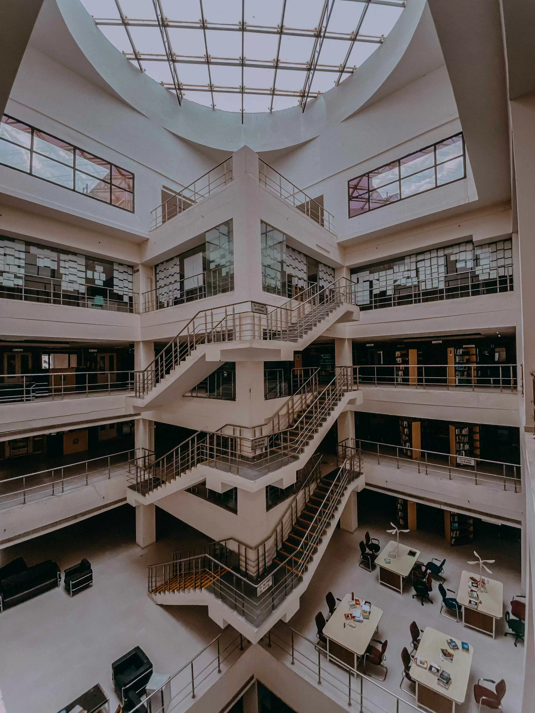
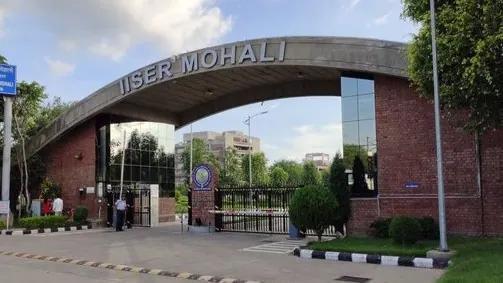

NABI Address
- National Agri-Food and Bio-manufacturing Institute (NABI)
- Sector 81, Knowledge City, Mohali, Punjab, India
The meeting includes research talks, poster sessions, mentoring interactions, and focused discussion windows across systems, cellular, molecular, cognitive, computational, and translational neuroscience. Final session-wise schedules will be published after abstract review.
NGN 2026 activities will take place across two venues in Mohali: NABI and IISER Mohali.



Detailed session sheets, speaker sequencing, and poster board allocation will be shared here soon.